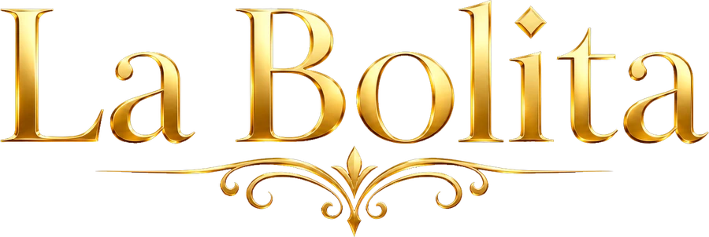

Para jugar
- 1Conecta tu wallet
- 2Elige la moneda
- 3Modos de juego
- 4Selecciona y apuesta
Elige la moneda
Conecta tu wallet para ver tus saldosModos de juego
Elige antes una monedaSelecciona tus números
Elige antes un juegoEl bombo
Números limitados
…
La charada
Los cien números con su nombre de siempre.
La bolita cubana explicada
Toca cualquier pregunta para ver la respuesta.
¿Qué número salió hoy en la bolita cubana?
Los resultados de hoy —del mediodía y de la noche— aparecen arriba, en la sección El bombo, con el fijo, los corridos, los parlés y el candado. Cada tirada muestra qué número salió en cuanto la Lotería de la Florida lo hace oficial.
¿De dónde salen los resultados?
La bolita cubana no tiene lotería propia: se guía por la Lotería de la Florida. El fijo son los dos últimos dígitos del Pick 3, y los corridos salen del Pick 4. Son los mismos números que juega la bolita de toda la vida, desde hace más de veinte años.
¿A qué hora salen los números?
Hay dos tiradas al día: el mediodía, a la 1:30 p. m. hora de Florida, y la noche, a las 9:45 p. m. hora de Florida. Los números aparecen a los pocos minutos de cada sorteo oficial. Las apuestas se cierran 30 minutos antes de cada tiro.
El fijo — qué es y cómo se juega
El fijo son los dos últimos dígitos del Pick 3 de Florida. Si el Pick 3 fue 4·4·6, el fijo es 46. Jugar al fijo es apostar a que salga ese número exacto de dos cifras. Es el más difícil de acertar (1 entre 100), por eso es el que más paga.
El terminal — la jugada más sencilla
El terminal es el último dígito del fijo. Si el fijo es 46, el terminal es 6. Jugar un terminal es apostar a ese último número: aciertas 1 de cada 10 veces, así que paga menos que el fijo pero es mucho más fácil de pegar. Ideal para empezar.
Los corridos — los acompañantes
Los corridos son dos números de dos cifras que salen del Pick 4 de Florida. Acompañan al fijo en cada tirada. Si el Pick 4 fue 3·1·5·9, los corridos son 31 y 59. Muchos jugadores los usan como números extra de la jugada del día.
El parlé — combinar para multiplicar
El parlé es apostar a dos números a la vez esperando que ambos salgan entre los principales del día (fijo y corridos). Es el que más multiplica tu apuesta, porque es el más difícil de acertar. Un parlé pegado paga mucho más que un fijo o un terminal.
El candado — los tres del día
El candado agrupa los tres números principales del día: el fijo y los dos corridos. Si el fijo es 46 y los corridos 31 y 59, el candado es 46 · 31 · 59. Es la foto completa de la tirada.
Cómo se juega aquí, paso a paso
Primero eliges la moneda con la que quieres jugar (BNB, USDT, USDC, Bitcoin y más). Después el modo: terminal, número solo o parlé. Marcas tu número, pones el importe y confirmas con tu wallet. Si tu número sale, tu premio queda listo para que lo cobres cuando quieras.
Todo funciona en cadena, con pagos automáticos y sin intermediarios. Nadie guarda tu dinero: vive en tu wallet hasta que apuestas, y el premio vuelve a ti al cobrar.
¿Cuánto se paga por acertar?
El pago depende del modo (el fijo y el parlé pagan más que el terminal) y de la liquidez disponible en la moneda que elijas. Antes de apostar verás exactamente cuánto cobrarías si aciertas, y ese número queda fijo para tu jugada. Cuanta más liquidez tenga una moneda, mayores premios permite.
¿Con qué monedas puedo jugar?
Con BNB, USDT, USDC, BTCB (Bitcoin), ETH, USDT.z y algunas más. Juegas y cobras siempre en la misma moneda: si apuestas en USDT, cobras en USDT; si apuestas en Bitcoin, cobras en Bitcoin. Nunca se mezclan. ¿No tienes ninguna? Mira la sección Comprar cripto para jugar.
La charada cubana
Cada número del 1 al 100 tiene su nombre en la charada cubana, una tradición de más de 150 años traída por los inmigrantes chinos. Muchos eligen su número por un sueño, una señal del día o la costumbre familiar. El caballo, la mariposa, el muerto... cada número cuenta algo.